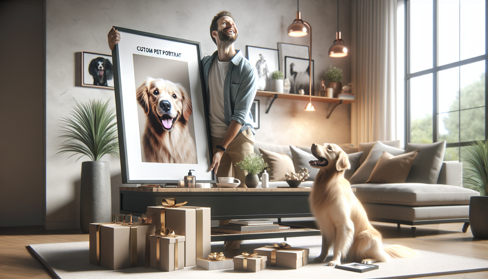

If you have ever tried shopping for a devoted pet owner, you know one thing is almost always true: generic gifts rarely feel special enough. Pet lovers adore presents that celebrate the animals who bring joy, comfort, and personality into their lives every single day. That is exactly why custom pet portraits have become such a meaningful and memorable gift idea.
Whether you are buying for a dog mom, a cat dad, a best friend, a spouse, or even yourself, a personalized pet portrait turns a favorite furry face into lasting art. It is thoughtful, emotional, stylish, and completely unique. More than just decor, it captures the bond between people and their pets in a way few gifts can.
In this post, we are diving into why custom pet portraits make perfect gifts, what makes them so personal, and why they are ideal for birthdays, holidays, anniversaries, memorials, and everyday surprises. If you are looking for a gift that feels heartfelt and unforgettable, this might be the one.
The best gifts show that you truly know someone. A custom pet portrait does exactly that. Instead of choosing something off a shelf, you are creating a one-of-a-kind piece inspired by the recipient's beloved pet. That level of personalization instantly makes the gift more thoughtful.
For many pet owners, their dog or cat is not just an animal. They are family. They are the greeter at the door, the cuddle buddy on the couch, the walking companion, and the source of countless funny memories. Giving a personalized portrait says, “I know how much your pet means to you, and I wanted to honor that.”
That is a powerful message, especially in a world full of quick, impersonal gift options. A custom portrait feels intentional, warm, and full of heart.
Every pet has their own charm. Some dogs are goofy and energetic. Some cats are regal and mysterious. Some pets have a signature head tilt, a favorite pose, or an expression their owner instantly recognizes. A custom pet portrait captures those little details that make each animal so lovable.
This is one reason pet portraits stand out from mass-produced pet-themed gifts. A mug with a paw print is cute, but a portrait based on a real pet tells a story. It brings out the sparkle in their eyes, the fluff in their fur, and the quirks that make them unforgettable.
For pet parents, seeing their companion transformed into art can be incredibly special. It validates the joy their pet brings and turns everyday love into something visible and lasting. It is both personal and beautiful, which is a rare combination in gift giving.
Custom pet portraits also work with many different styles, from elegant and classic to playful and modern. That flexibility makes it easy to create something that fits the recipient's taste and home decor while still keeping the pet front and center.
One of the best things about custom pet portraits is how versatile they are. They are not limited to one type of celebration. In fact, they work for nearly every occasion where you want to give something memorable.
Here are just a few times when a personalized pet portrait makes an amazing gift:
Because they are so meaningful, custom pet portraits can feel appropriate for both joyful milestones and tender moments. They can make someone laugh, cry happy tears, or feel deeply comforted. Few gifts are flexible enough to carry that kind of emotional range.
Some gifts are exciting for a moment and then slowly disappear into a drawer. A custom pet portrait is different. It is the kind of gift people display proudly in their home, office, or favorite room. Every time they walk past it, they are reminded of their pet and of the person who gave it to them.
That lasting impact is a huge reason why custom pet portraits make such perfect gifts. They are not temporary. They become part of a person's daily life. They add warmth to a space and often become conversation starters when guests visit.
There is also something timeless about art. Trends come and go, but a portrait of a cherished pet keeps its emotional value year after year. It can move from apartment to first home, from office desk to gallery wall, and remain just as treasured over time.
For gift shoppers who want to give something meaningful instead of forgettable, this makes personalized pet art an especially smart choice.
One of the most heartfelt reasons people choose custom pet portraits is to honor a pet who has crossed the rainbow bridge. Losing a pet is deeply painful, and many pet owners appreciate keepsakes that help them remember the love they shared.
A memorial pet portrait can be a beautiful way to offer comfort. It acknowledges the importance of that bond and gives the recipient something tangible to hold onto. Unlike generic sympathy gifts, a portrait feels deeply personal and genuinely compassionate.
These portraits can capture the pet in a favorite pose, from a beloved photo, or with details that help keep their memory close. For someone grieving, that can mean more than words.
If you are considering a memorial gift, a custom pet portrait is thoughtful because it is both emotional and respectful. It says, “Your pet mattered, and their memory deserves to be honored.” For many people, that kind of recognition is incredibly healing.
When people hear the phrase custom pet portrait, they often think of dog owners first. And yes, dog lovers absolutely adore them. But these gifts are perfect for all kinds of pet parents. Cat owners, rabbit lovers, bird enthusiasts, and even families with more unusual pets can all appreciate personalized artwork featuring their companion.
That broad appeal makes pet portraits a great option when you are not sure what else to buy. If someone constantly shares pet photos, talks about their furry friend, or treats their animal like a family member, there is a good chance they would be thrilled by a portrait.
They also work for different personalities and age groups:
That is part of the magic. A custom pet portrait feels special without being difficult to love.
Some gifts are emotional but not practical. Others are useful but not very exciting. A custom pet portrait offers a wonderful balance of sentiment and style. It is meaningful enough to tug at the heartstrings, but also beautiful enough to elevate a room.
That makes it especially appealing for modern gift shoppers who want something personal yet polished. Personalized pet art can fit into a wide range of home aesthetics, from minimalist and modern to cozy and rustic. It feels custom in every sense of the word.
There is also a fun, creative aspect to giving a pet portrait. It shows imagination. It surprises people. And it often becomes one of those gifts recipients talk about long after the occasion has passed.
If you want a present that feels unique, expressive, and emotionally rich, custom pet portraits check every box. They are sweet without being cheesy, stylish without being cold, and personal without being overcomplicated.
At the end of the day, the most memorable gifts are the ones that make people feel seen, understood, and appreciated. Custom pet portraits do all of that beautifully. They celebrate the love between pets and their people, capture meaningful memories, and turn them into art that lasts.
For pet owners, dog lovers, and anyone shopping for a heartfelt present, it is hard to beat a gift that is this personal. Whether you are celebrating a birthday, holiday, adoption anniversary, or honoring a beloved pet's memory, a custom portrait is a thoughtful choice that stands out.
If you are ready to give a gift that is warm, unique, and unforgettable, personalized pet art is a wonderful place to start.
Shop personalized pet products at SnoutAndAbout on Etsy.